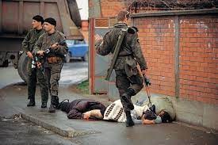
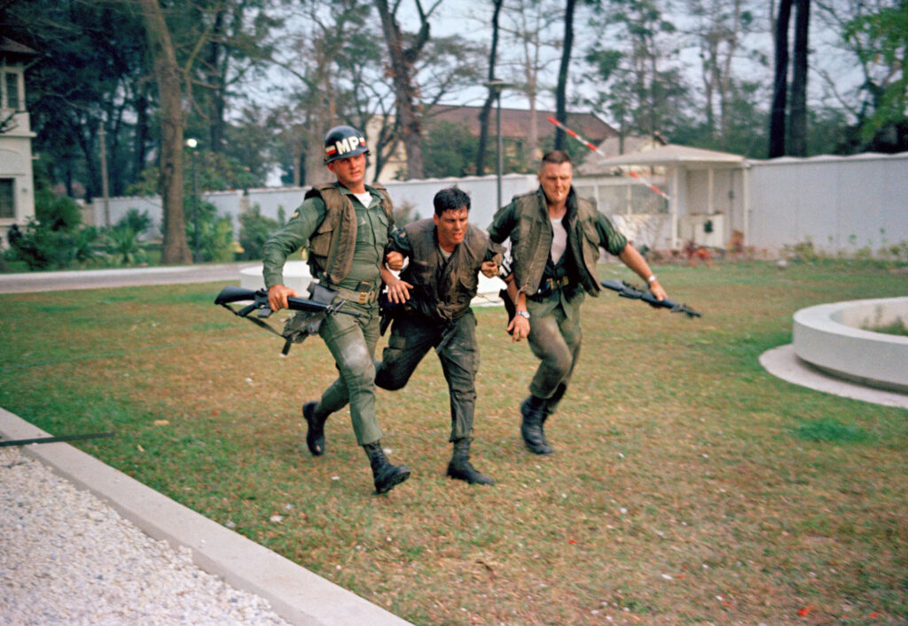

The Fall of Saigon was the event that officialized the win of the North Vietnamese in the Vietnam War, a conflict between the american-backed Republic of Vietnam (also known as South Vietnam), and the soviet-supported Democratic Republic of Vietnam (also known as North Vietnam). The Fall of Saigon follows the encirclement of Saigon, where the PAVN, the North Vietnamese Army, encircled the City of Saigon following the loss at Xuân Lộc. This encirclement would cause a panic, especially for the US government, under the Ford Administration. A day after the encirclement, evacuations would begin at the Saigon Embassy, signalled by the Armed Forces Radio's playing of Irving Berlin's song "White Christmas", as helicopters started evacuating American citizens and at-risk south vietnamese citizens. The evacuation point would be at the Defense Attaché Offices, or the DAO compound, with Embassy providing transport to the compound. This plan would fail, however, as helicopters would land at the Saigon Embassy to onload those at the embassy. On April 30th, the North Vietnamese began pushing into Saigon, with American officials restricting helicopter space to American citizens only. By noon of April 30th, the North Vietnamese flag rose on top of the Presidential Palace, and at 2:30 PM, the Vietnam War ended with two announcements, one by the South Vietnamese President, and one by Bùi Văn Tùng, a Lieutenant Colonel for PAVN. Both announcements confirmed the unconditional surrender of South Vietnam to the Democratic Republic of Vietnam.
The Bosnian War & NATO Intervention

The Bosnian War was a war between the Bosnians & Croats, and the Serbians, and was caused by the fall of Yugoslavia. As Croatia and Bosnia began pushing for independence from Yugoslavia, it got pushback from Serbia. Serbia was arguably the most powerful nation out of the Yugoslavic states, and thus favored keeping Yugoslavia together, compared to the national identities of Croatia and Bosnia. This war would break out in 1992, as a result of the secession of Bosnia and Croatia from Yugoslavia. During this war, there would be a lot of atrocities, including war crimes on the Bosniaks and the Croats, done by the Serbian Military and paramilitaries, aswell as vice versa. The biggest atrocities would happen in the Siege of Sarajevo, where Serbian forces had besieged the capital of Bosnia, which was Sarajevo. These war crimes and atrocities would result in the deployment of UN Peacekeepers to the region, aswell as NATO airstrikes in favor of Bosnia and Croatia. After 3 years, in 1995, the war would end, and it would prove to be a scar of the Bosnians and the Croats.
1968 Attack on the Saigon Embassy

The Attack on the Saigon Embassy was a keystone of the Tet Offensive, a series of attacks in major South Vietnam cities done by the Vietcong, with the goal of starting an uprising within South Vietnam, to topple the government of the Republic of Vietnam. The attack on the Embassy was a failure, resulting in all but 1 Vietcong Sapper being killed, out of a 19-man Vietcong sapper team. Meanwhile, 5 US military servicemen were killed during the attack, four of them being US Army Military Policemen, and one being a US Marine. While the Vietcong failed to complete their objectives, which was mainly to take the Embassy and take hostages, the North Vietnamese gained a decisive propagandic victory, as support for the Vietnam War tanked in the United States, as film of the brutality of the attacks shocked the American populace, and fueled the anti-war sentiment in America. This sentiment would have a dire effect on the survival of the Republic of Vietnam, as the political pressure from the people of America would force American combat operations in Vietnam to cease, and Washington would slow down its aid to South Vietnam.
The Battles of Fallujah
The battles of Fallujah were important to both the Global War on Terror and the Iraq War, serving as a turning point for what the Iraq War would turn into for the generals at Central Command (CENTCOM). Fallujah held the first two major battles that had insurgents as the main opposing force, not an organized military like Saddam's Iraqi Army. Following the invasion of Iraq and the collapse of the Saddam Regime, the Coalition Provisional Authority, the provisional government that ruled over Iraq during coalition control, disbanded the Army and in local areas, police forces. This would force hundreds of thousands of Iraqis onto the streets, without proper law and order, due to the fact there were no police force and the coalition did not dabble much into keeping basic law and order, militias would begin to form. In Fallujah, coalitionary forces pulled out of Fallujah due to high political pressure, and established a coalition-sanctioned militia called the "Fallujah Brigade", which would act as a form of law enforcement for the city. This brigade would not work, as it would collapse as its militiamen would turn over to other militias, including local insurgency groups. With the collapse of the Fallujah Brigade, these insurgent groups practically had free reign over Fallujah. They would set up Fallujah to be a nightmare for any coalitionary forces, including traps, IEDs, and other ways to make retaking Fallujah a challenging task. With the fall of the Fallujah Brigade, the takeover of Fallujah, and an attack on Blackwater contractors, Central Command would dispatch Regimental Combat Team 1 (RCT-1) and Regimental Combat Team 7 (RCT-7) to retake Fallujah, along with other coalitionary forces like the Scottish Black Watch, and detachments of the Iraqi Security Forces. The Second Battle of Fallujah would last a month, going from November 7th to December 23rd of 2004. This battle would involve the coalitionary forces sweeping through the city and destroying the insurgency in the city, which was challenging due to guerilla-like tactics such as tunnel systems throughout the city. Sadly, this battle only kept out the insurgency from retaining full control for a decade, with ISIS retaking Fallujah in 2014, as the Islamic State expanded throughout the Middle East.